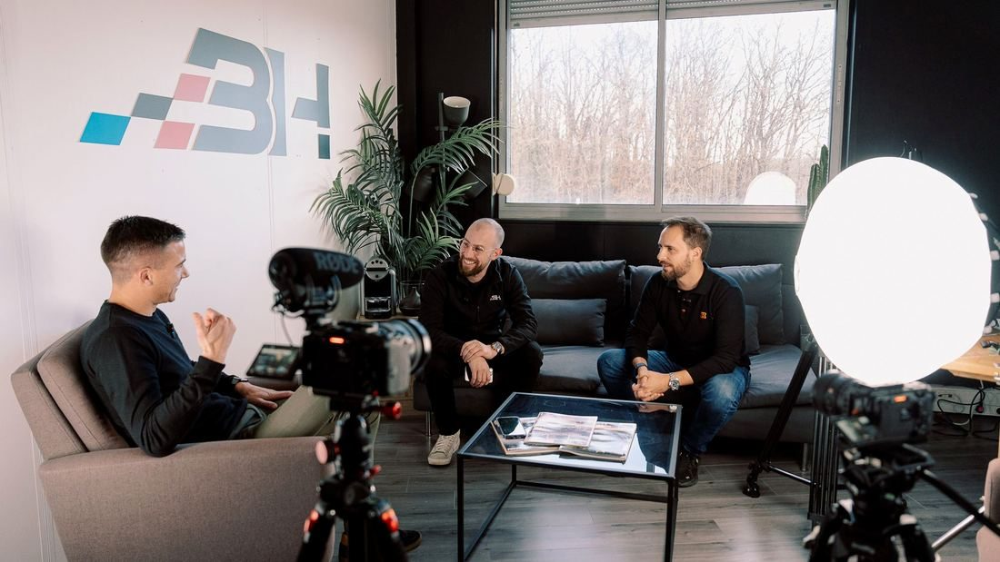

Press & media
What they wrote.
Articles, interviews, podcasts and videos about my journey and the companies I have co-founded. Coverage is in French.

Articles & interviews
press
BH Car, l'intermédiaire de la vente de véhicules d'occasion
Le Parisien — May 2019
Read the articlepress
Groupe BH : l'ascension multi-métiers d'un intermédiaire du véhicule d'occasion
Auto Infos
Read the articlepress
Le réseau d'agences automobiles BH Car poursuit son développement
Franchise Magazine — November 2025
Read the articlepress
Equip Auto 2025 : Hexagone Automotive présente son label Federauto
Le Journal de l'Automobile — 2025
Read the articlepress
BH Atelier s'active pour convaincre les garagistes indépendants
Le Journal de l'Automobile
Read the articlepress
Pour s'étendre, les franchises BH Atelier et BH Pare-Brise misent sur des abonnements
Auto Infos
Read the articlepress
Le Groupe BH accélère son développement
J2R Auto
Read the articlepress
BH Atelier veut grandir
Zepros Auto
Read the articlepress
Le label Vroomiz sort de l'ombre
Auto Infos
Read the articlepress
Vroomiz et la FNA deviennent partenaires
Le Journal de l'Automobile
Read the articlepress
À Pluneret, un atelier mobile pour les réparations de voitures
Ouest-France
Read the articlepress
BH Car vous aide à revendre votre voiture
La République du Centre
Read the articleAre you a journalist, or do you run a podcast? Write to me directly.
Official bio
Guillaume Herbin is a French entrepreneur born in 1989 in Orléans, who has worked in the automotive world for more than fifteen years.
In 2010 he co-founded BH Car with a simple idea: rethink the way used vehicles are sold, and build a model capable of reaching far beyond a single branch. Over the years that venture became the BH Group, a nationwide network of more than 100 branches organised around several automotive trades, from brokerage to mechanical repair and auto glass.
But his path is not just the growth of a network. Guillaume has also built businesses in digital products and automotive software, driven by the will to create tools able to make life simpler for professionals in the sector.
Starting from nothing, he went through the first sales, the first mistakes, the hiring, the growth spurts and the moments of doubt, before building teams and organisations able to run without him day to day. That is probably what best describes his approach: start from an idea, test it in the field, structure it, then create the conditions for it to scale.
After several years in Dubai, he settled in Marrakech, where he now runs his businesses, surrounded by teams based in France. He devotes his energy to strategy, new projects, investment, and passing on what he knows.
A car enthusiast long before he made it his job, he keeps a particular interest in cars with character and in the automotive world in all its forms.
This biography and the photograph above may be reused freely in a press article or an interview.